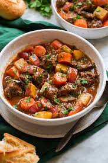

Beef Stew Recipe

Description
This homemade Beef Stew is the ultimate hearty comfort food!
It makes the coziest meal and is perfect served with rustic
bread alongside it. This version is generous with the beef and
the vegetables, and it’s paired with a rich nicely thickened
broth.
Ingredients
- 2 1/4 lbs. chuck roast, trimmed of excess fat, cut into 1 1/4-inch cubes
- Salt and freshly ground black pepper
- 3 1/2 Tbsp olive oil, divided
- 2 cups chopped yellow onion (1 large)
- 1 1/2 Tbsp minced garlic (about 4 cloves)
- 1/4 cup all-purpose flour
- 1.5 Tbsp tomato paste
- 1 cup dry red wine, such as Pinot Noir or Cotes du Rhone
- 3 1/2 cups beef stock
- 2 tsp Worcestershire sauce
- 1 Tbsp fresh thyme leaves
- 2 tsp minced fresh rosemary
- 2 bay leaves
- 20 oz. red potatoes, scrubbed and rinsed clean
- 14 oz. large carrots (about 4)
- 1 Tbsp balsamic vinegar
- 2 Tbsp minced fresh parsley
Instructions
- Heat oven, and pot on stove: Move oven rack to lower third of the oven. Preheat oven to 300 degrees.
- Heat 1 Tbsp olive oil in a large oven safe pot over medium-high heat.
- Prepare and cook the stew meat in batches, set aside: Dab half of the roast dry with paper towels, season lightly with salt and pepper then add to the pot with space between pieces.
- Sear until browned on bottom, about 3 – 4 minutes. Turn and brown on opposite side, about 2 minutes longer. Transfer to a plate.
- Add another 1/2 Tbsp oil to pot and repeat process with remaining half of beef. Transfer second batch of beef to the plate as well.
- Saute onions, then garlic: Reduce heat to medium, add 1 Tbsp olive oil then add onions. Saute 5 minutes or until slightly golden brown.
- Add garlic and saute 30 seconds longer.
- Add thickeners, then liquids: Stir in flour and tomatoes paste, and cook stirring constantly, about 45 to 60 seconds (reduce burner temp if needed).While stirring slowly pour in red wine, scrape up browned bits from the bottom of the pot. While stirring pour in beef broth and Worcestershire sauce.
- Return meat, add herbs and simmer: Return beef to pot along with thyme, rosemary and bay leaves. Bring to a simmer stirring frequently.
- Remove from heat.
- Bake in oven: Cover pot with the lid and transfer to the oven. Let cook 1 1/2 hours.
- Add vegetables to stew, continue to bake: Once time is almost up cut the potatoes into 1-inch cubes, then peel and cut the carrots into 1-inch slices. Stir potatoes and carrots into stew then cover and return to the oven.
- Bake until vegetables are tender, about 60 to 70 minutes longer.
- Finish with balsamic and parsley: Remove bay leaves, stir in balsamic vinegar and season stew with salt and pepper to taste. Let rest off heat for about 5 minutes before serving. Garnish servings with parsley.